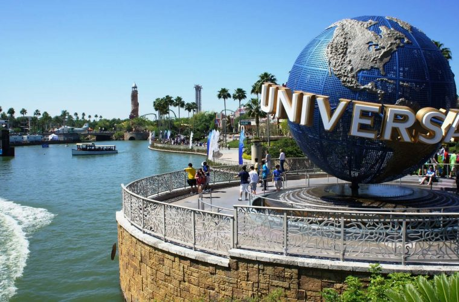

Descubre América. Los Estados Unidos de América tiene mucho que ofrecer. Aprende acerca de la historia de EE.UU.; visita alguno de nuestros parques y maravillas de la naturaleza; experimenta las artes, la arquitectura y las playas, prueba el sabor de nuestros alimentos y vinos; y disfruta de los hermosos paisajes, actividades al aire libre y los deportes.

Con sus playas caribeñas, picos montañosos andinos cubiertos de nieve, selvas tropicales y parques nacionales. La magia del país, su asombrosa variedad de climas, paisajes y la amabilidad de su gente hacen de cada viaje una experiencia inolvidable.

Otra de las razones por las que viajar a Japón es visitar sus grandes urbes. Metrópolis gigantes, grandes edificios, neones, gente por todos sitios y cientos de lugares de ocio. La antítesis de ciudades tradicionales como Kioto es Tokio, Osaka o Yokohama. Tokio son varias ciudades metidas en una sola.

Si quieres ir a la zona de playas, los mejores meses son de junio a agosto, cuando hace más calor. Para visitar las ciudades mejor evitar esos meses ya que hace mucho calor, los mejores meses son abril/mayo o septiembre/octubre. Hace buen tiempo y hay menos turistas.